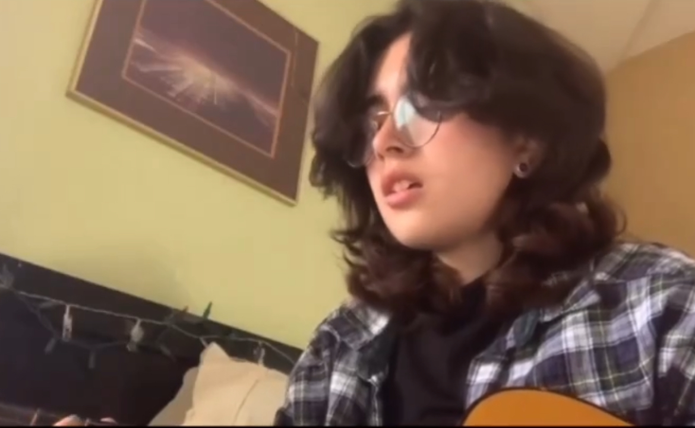
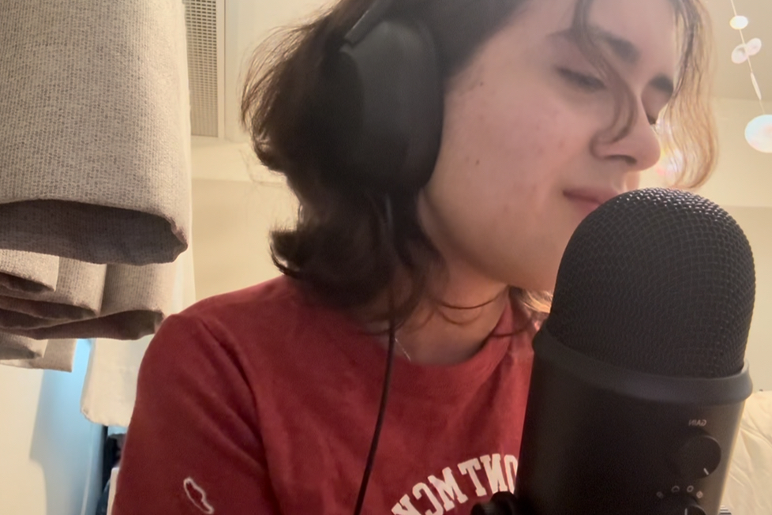

I am a junior at Claremont McKenna College studying Science Management. Even though I don't study music, I have always loved it since I was a little kid.
This is a side-by-side of me performing in college in a capella (this was a concert I solo'd at last month!) compared to me as a freshman in high school.
I have loved music since I was a toddler. My earliest memories are of me sitting in the back of my mom's car singing along to Bruno Mars "Just the Way You Are". They used to play the music video on an old, small monitor for my class when I was in kindergarten.
That love for music never left me. In elementary school, I performed every year at the talent show (which required you to audition), and my dad would burn karaoke tracks onto a CD for me to use.
Funnily enough, I still had stage fright. I still do. There's a particular way your heart will beat, and you'll feel ever so slightly light headed when performing. Despite it all, I wouldn't trade performing for the world. Obviously, I don't intend on making it my full time career, because I'm not studying it, but being able to write, play, and sing my own music has brought me a type of fulfillment that can't be replaced.
I'm self taught on guitar. I started learning in freshman year of highschool on a guitar that belonged to my family friend that she hadn't used in years. It was hard at first, because when your hands aren't used to it, the metal strings will seriously dig into your fingers. I gave up on learning, initially. I didn't try again until COVID-19 lockdowns, when I had frankly too much time on my hands.
Of course, during that lapse in learning, my older brother helped me get this software on my laptop he used for recording his own music: FL Studio.
Now, I'm not going to say it was easy. There was definitely a learning curve to understanding how to use FL Studio for
music.
But I was stubborn for once. I didn't give up. I saved up my allowance for months, and eventually purchased a Blue Yeti microphone.
Is it the most incredible microphone one can use? Not exactly. Most people use them as podcast microphones, and even then, they're considered at the low end of decent quality microphones. But it's enough for me.
And it was probably the best purchase I could have made, because look at me now :)